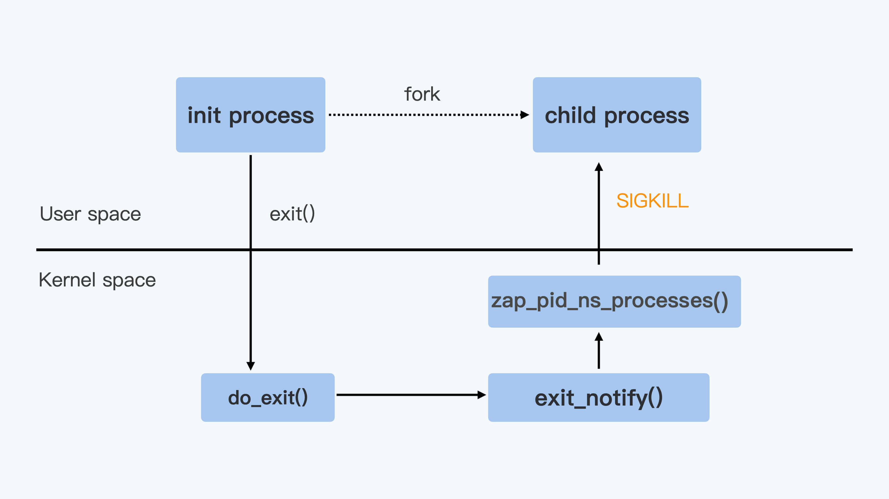

- 00 开篇词 一个态度两个步骤，成为容器实战高手.md.html
- 01 认识容器：容器的基本操作和实现原理.md.html
- 02 理解进程（1）：为什么我在容器中不能kill 1号进程？.md.html
- 03 理解进程（2）：为什么我的容器里有这么多僵尸进程？.md.html
- 04 理解进程（3）：为什么我在容器中的进程被强制杀死了？.md.html
- 05 容器CPU（1）：怎么限制容器的CPU使用？.md.html
- 06 容器CPU（2）：如何正确地拿到容器CPU的开销？.md.html
- 07 Load Average：加了CPU Cgroup限制，为什么我的容器还是很慢？.md.html
- 08 容器内存：我的容器为什么被杀了？.md.html
- 09 Page Cache：为什么我的容器内存使用量总是在临界点.md.html
- 10 Swap：容器可以使用Swap空间吗？.md.html
- 11 容器文件系统：我在容器中读写文件怎么变慢了？.md.html
- 12 容器文件Quota：容器为什么把宿主机的磁盘写满了？.md.html
- 13 容器磁盘限速：我的容器里磁盘读写为什么不稳定_.md.html
- 14 容器中的内存与IO：容器写文件的延时为什么波动很大？.md.html
- 15 容器网络：我修改了_proc_sys_net下的参数，为什么在容器中不起效？.md.html
- 16 容器网络配置（1）：容器网络不通了要怎么调试.md.html
- 17 容器网络配置（2）：容器网络延时要比宿主机上的高吗.md.html
- 18 容器网络配置（3）：容器中的网络乱序包怎么这么高？.md.html
- 19 容器安全（1）：我的容器真的需要privileged权限吗.md.html
- 20 容器安全（2）：在容器中，我不以root用户来运行程序可以吗？.md.html
- 加餐01 案例分析：怎么解决海量IPVS规则带来的网络延时抖动问题？.md.html
- 加餐02 理解perf：怎么用perf聚焦热点函数？.md.html
- 加餐03 理解ftrace（1）：怎么应用ftrace查看长延时内核函数？.md.html
- 加餐04 理解ftrace（2）：怎么理解ftrace背后的技术tracepoint和kprobe？.md.html
- 加餐05 eBPF：怎么更加深入地查看内核中的函数？.md.html
- 加餐06 BCC：入门eBPF的前端工具.md.html
- 结束语 跳出舒适区，突破思考的惰性.md.html
- 捐赠
04 理解进程（3）：为什么我在容器中的进程被强制杀死了？
你好，我是程远。
今天我们来讲容器中init进程的最后一讲，为什么容器中的进程被强制杀死了。理解了这个问题，能够帮助你更好地管理进程，让容器中的进程可以graceful shutdown。
我先给你说说，为什么进程管理中做到这点很重要。在实际生产环境中，我们有不少应用在退出的时候需要做一些清理工作，比如清理一些远端的链接，或者是清除一些本地的临时数据。
这样的清理工作，可以尽可能避免远端或者本地的错误发生，比如减少丢包等问题的出现。而这些退出清理的工作，通常是在SIGTERM这个信号用户注册的handler里进行的。
但是，如果我们的进程收到了SIGKILL，那应用程序就没机会执行这些清理工作了。这就意味着，一旦进程不能graceful shutdown，就会增加应用的出错率。
所以接下来，我们来重现一下，进程在容器退出时都发生了什么。
场景再现
在容器平台上，你想要停止一个容器，无论是在Kubernetes中去删除一个pod，或者用Docker停止一个容器，最后都会用到Containerd这个服务。
而Containerd在停止容器的时候，就会向容器的init进程发送一个SIGTERM信号。
我们会发现，在init进程退出之后，容器内的其他进程也都立刻退出了。不过不同的是，init进程收到的是SIGTERM信号，而其他进程收到的是SIGKILL信号。
在理解进程的[第一讲]中，我们提到过SIGKILL信号是不能被捕获的（catch）的，也就是用户不能注册自己的handler，而SIGTERM信号却允许用户注册自己的handler，这样的话差别就很大了。
那么，我们就一起来看看当容器退出的时候，如何才能让容器中的进程都收到SIGTERM信号，而不是SIGKILL信号。
延续前面课程中处理问题的思路，我们同样可以运行一个简单的容器，来重现这个问题，用这里的代码执行一下 make image ，然后用Docker启动这个容器镜像。
docker run -d --name fwd_sig registry/fwd_sig:v1 /c-init-sig
你会发现，在我们用 docker stop 停止这个容器的时候，如果用strace工具来监控，就能看到容器里的init进程和另外一个进程收到的信号情况。
在下面的例子里，进程号为15909的就是容器里的init进程，而进程号为15959的是容器里另外一个进程。
在命令输出中我们可以看到，init进程（15909）收到的是SIGTERM信号，而另外一个进程（15959）收到的果然是SIGKILL信号。
# ps -ef | grep c-init-sig
root 15857 14391 0 06:23 pts/0 00:00:00 docker run -it registry/fwd_sig:v1 /c-init-sig
root 15909 15879 0 06:23 pts/0 00:00:00 /c-init-sig
root 15959 15909 0 06:23 pts/0 00:00:00 /c-init-sig
root 16046 14607 0 06:23 pts/3 00:00:00 grep --color=auto c-init-sig
# strace -p 15909
strace: Process 15909 attached
restart_syscall(<... resuming interrupted read ...>) = ? ERESTART_RESTARTBLOCK (Interrupted by signal)
--- SIGTERM {si_signo=SIGTERM, si_code=SI_USER, si_pid=0, si_uid=0} ---
write(1, "received SIGTERM\n", 17) = 17
exit_group(0) = ?
+++ exited with 0 +++
# strace -p 15959
strace: Process 15959 attached
restart_syscall(<... resuming interrupted read ...>) = ?
+++ killed by SIGKILL +++
知识详解：信号的两个系统调用
我们想要理解刚才的例子，就需要搞懂信号背后的两个系统调用，它们分别是kill()系统调用和signal()系统调用。
这里呢，我们可以结合前面讲过的信号来理解这两个系统调用。在容器init进程的第一讲里，我们介绍过信号的基本概念了，信号就是Linux进程收到的一个通知。
等你学完如何使用这两个系统调用之后，就会更清楚Linux信号是怎么一回事，遇到容器里信号相关的问题，你就能更好地理清思路了。
我还会再给你举个使用函数的例子，帮助你进一步理解进程是如何实现graceful shutdown的。
进程对信号的处理其实就包括两个问题，一个是进程如何发送信号，另一个是进程收到信号后如何处理。
我们在Linux中发送信号的系统调用是kill()，之前很多例子里面我们用的命令 kill ，它内部的实现就是调用了kill()这个函数。
下面是Linux Programmer’s Manual里对kill()函数的定义。
这个函数有两个参数，一个是 sig，代表需要发送哪个信号，比如sig的值是15的话，就是指发送SIGTERM；另一个参数是 pid，也就是指信号需要发送给哪个进程，比如值是1的话，就是指发送给进程号是1的进程。
NAME
kill - send signal to a process
SYNOPSIS
#include <sys/types.h>
#include <signal.h>
int kill(pid_t pid, int sig);
我们知道了发送信号的系统调用之后，再来看另一个系统调用，也就是signal()系统调用这个函数，它可以给信号注册handler。
下面是signal()在Linux Programmer’s Manual里的定义，参数 signum 也就是信号的编号，例如数值15，就是信号SIGTERM；参数 handler 是一个函数指针参数，用来注册用户的信号handler。
NAME
signal - ANSI C signal handling
SYNOPSIS
#include <signal.h>
typedef void (*sighandler_t)(int);
sighandler_t signal(int signum, sighandler_t handler);
在容器init进程的第一讲里，我们学过进程对每种信号的处理，包括三个选择：调用系统缺省行为、捕获、忽略。而这里的选择，其实就是程序中如何去调用signal()这个系统调用。
第一个选择就是缺省，如果我们在代码中对某个信号，比如SIGTERM信号，不做任何signal()相关的系统调用，那么在进程运行的时候，如果接收到信号SIGTERM，进程就会执行内核中SIGTERM信号的缺省代码。
对于SIGTERM这个信号来说，它的缺省行为就是进程退出（terminate）。
内核中对不同的信号有不同的缺省行为，一般会采用退出（terminate），暂停（stop），忽略（ignore）这三种行为中的一种。
那第二个选择捕获又是什么意思呢?
捕获指的就是我们在代码中为某个信号，调用signal()注册自己的handler。这样进程在运行的时候，一旦接收到信号，就不会再去执行内核中的缺省代码，而是会执行通过signal()注册的handler。
比如下面这段代码，我们为SIGTERM这个信号注册了一个handler，在handler里只是做了一个打印操作。
那么这个程序在运行的时候，如果收到SIGTERM信号，它就不会退出了，而是只在屏幕上显示出”received SIGTERM”。
void sig_handler(int signo)
{
if (signo == SIGTERM) {
printf("received SIGTERM\n");
}
}
int main(int argc, char *argv[])
{
...
signal(SIGTERM, sig_handler);
...
}
我们再来看看第三个选择，如果要让进程“忽略”一个信号，我们就要通过signal()这个系统调用，为这个信号注册一个特殊的handler，也就是 SIG_IGN 。
比如下面的这段代码，就是为SIGTERM这个信号注册SIG_IGN。
这样操作的效果，就是在程序运行的时候，如果收到SIGTERM信号，程序既不会退出，也不会在屏幕上输出log，而是什么反应也没有，就像完全没有收到这个信号一样。
int main(int argc, char *argv[])
{
...
signal(SIGTERM, SIG_IGN);
...
}
好了，我们通过讲解signal()这个系统调用，帮助你回顾了信号处理的三个选择：缺省行为、捕获和忽略。
这里我还想要提醒你一点， SIGKILL和SIGSTOP信号是两个特权信号，它们不可以被捕获和忽略，这个特点也反映在signal()调用上。
我们可以运行下面的这段代码，如果我们用signal()为SIGKILL注册handler，那么它就会返回SIG_ERR，不允许我们做捕获操作。
# cat reg_sigkill.c
#include <stdio.h>
#include <stdlib.h>
#include <unistd.h>
#include <errno.h>
#include <signal.h>
typedef void (*sighandler_t)(int);
void sig_handler(int signo)
{
if (signo == SIGKILL) {
printf("received SIGKILL\n");
exit(0);
}
}
int main(int argc, char *argv[])
{
sighandler_t h_ret;
h_ret = signal(SIGKILL, sig_handler);
if (h_ret == SIG_ERR) {
perror("SIG_ERR");
}
return 0;
}
# ./reg_sigkill
SIG_ERR: Invalid argument
最后，我用下面这段代码来做个小结。
这段代码里，我们用signal()对SIGTERM这个信号做了忽略，捕获以及恢复它的缺省行为，并且每一次都用kill()系统调用向进程自己发送SIGTERM信号，这样做可以确认进程对SIGTERM信号的选择。
#include <stdio.h>
#include <signal.h>
typedef void (*sighandler_t)(int);
void sig_handler(int signo)
{
if (signo == SIGTERM) {
printf("received SIGTERM\n\n");
// Set SIGTERM handler to default
signal(SIGTERM, SIG_DFL);
}
}
int main(int argc, char *argv[])
{
//Ignore SIGTERM, and send SIGTERM
// to process itself.
signal(SIGTERM, SIG_IGN);
printf("Ignore SIGTERM\n\n");
kill(0, SIGTERM);
//Catch SIGERM, and send SIGTERM
// to process itself.
signal(SIGTERM, sig_handler);
printf("Catch SIGTERM\n");
kill(0, SIGTERM);
//Default SIGTERM. In sig_handler, it sets
//SIGTERM handler back to default one.
printf("Default SIGTERM\n");
kill(0, SIGTERM);
return 0;
}
我们一起来总结一下刚才讲的两个系统调用：
先说说kill()这个系统调用，它其实很简单，输入两个参数：进程号和信号，就把特定的信号发送给指定的进程了。
再说说signal()这个调用，它决定了进程收到特定的信号如何来处理，SIG_DFL参数把对应信号恢复为缺省handler，也可以用自定义的函数作为handler，或者用SIG_IGN参数让进程忽略信号。
对于SIGKILL信号，如果调用signal()函数，为它注册自定义的handler，系统就会拒绝。
解决问题
我们在学习了kill()和signal()这个两个信号相关的系统调用之后，再回到这一讲最初的问题上，为什么在停止一个容器的时候，容器init进程收到的SIGTERM信号，而容器中其他进程却会收到SIGKILL信号呢？
当Linux进程收到SIGTERM信号并且使进程退出，这时Linux内核对处理进程退出的入口点就是do_exit()函数，do_exit()函数中会释放进程的相关资源，比如内存，文件句柄，信号量等等。
Linux内核对处理进程退出的入口点就是do_exit()函数，do_exit()函数中会释放进程的相关资源，比如内存，文件句柄，信号量等等。
在做完这些工作之后，它会调用一个exit_notify()函数，用来通知和这个进程相关的父子进程等。
对于容器来说，还要考虑Pid Namespace里的其他进程。这里调用的就是 zap_pid_ns_processes()这个函数，而在这个函数中，如果是处于退出状态的init进程，它会向Namespace中的其他进程都发送一个SIGKILL信号。
整个流程如下图所示。

你还可以看一下，内核代码是这样的。
/*
* The last thread in the cgroup-init thread group is terminating.
* Find remaining pid_ts in the namespace, signal and wait for them
* to exit.
*
* Note: This signals each threads in the namespace - even those that
* belong to the same thread group, To avoid this, we would have
* to walk the entire tasklist looking a processes in this
* namespace, but that could be unnecessarily expensive if the
* pid namespace has just a few processes. Or we need to
* maintain a tasklist for each pid namespace.
*
*/
rcu_read_lock();
read_lock(&tasklist_lock);
nr = 2;
idr_for_each_entry_continue(&pid_ns->idr, pid, nr) {
task = pid_task(pid, PIDTYPE_PID);
if (task && !__fatal_signal_pending(task))
group_send_sig_info(SIGKILL, SEND_SIG_PRIV, task, PIDTYPE_MAX);
}
说到这里，我们也就明白为什么容器init进程收到的SIGTERM信号，而容器中其他进程却会收到SIGKILL信号了。
前面我讲过，SIGKILL是个特权信号（特权信号是Linux为kernel和超级用户去删除任意进程所保留的，不能被忽略也不能被捕获）。
所以进程收到这个信号后，就立刻退出了，没有机会调用一些释放资源的handler之后，再做退出动作。
而SIGTERM是可以被捕获的，用户是可以注册自己的handler的。因此，容器中的程序在stop container的时候，我们更希望进程收到SIGTERM信号而不是SIGKILL信号。
那在容器被停止的时候，我们该怎么做，才能让容器中的进程收到SIGTERM信号呢？
你可能已经想到了，就是让容器init进程来转发SIGTERM信号。的确是这样，比如Docker Container里使用的tini作为init进程，tini的代码中就会调用sigtimedwait()这个函数来查看自己收到的信号，然后调用kill() 把信号发给子进程。
我给你举个具体的例子说明，从下面的这段代码中，我们可以看到除了SIGCHLD这个信号外，tini会把其他所有的信号都转发给它的子进程。
int wait_and_forward_signal(sigset_t const* const parent_sigset_ptr, pid_t const child_pid) {
siginfo_t sig;
if (sigtimedwait(parent_sigset_ptr, &sig, &ts) == -1) {
switch (errno) {
…
}
} else {
/* There is a signal to handle here */
switch (sig.si_signo) {
case SIGCHLD:
/* Special-cased, as we don't forward SIGCHLD. Instead, we'll
* fallthrough to reaping processes.
*/
PRINT_DEBUG("Received SIGCHLD");
break;
default:
PRINT_DEBUG("Passing signal: '%s'", strsignal(sig.si_signo));
/* Forward anything else */
if (kill(kill_process_group ? -child_pid : child_pid, sig.si_signo)) {
if (errno == ESRCH) {
PRINT_WARNING("Child was dead when forwarding signal");
} else {
PRINT_FATAL("Unexpected error when forwarding signal: '%s'", strerror(errno));
return 1;
}
}
break;
}
}
return 0;
}
那么我们在这里明确一下，怎么解决停止容器的时候，容器内应用程序被强制杀死的问题呢？
解决的方法就是在容器的init进程中对收到的信号做个转发，发送到容器中的其他子进程，这样容器中的所有进程在停止时，都会收到SIGTERM，而不是SIGKILL信号了。
重点小结
这一讲我们要解决的问题是让容器中的进程，在容器停止的时候，有机会graceful shutdown，而不是收到SIGKILL信号而被强制杀死。
首先我们通过对kill()和signal()这个两个系统调用的学习，进一步理解了进程是怎样处理Linux信号的，重点是信号在接收处理的三个选择：忽略，捕获和缺省行为。
通过代码例子，我们知道SIGTERM是可以被忽略和捕获的，但是SIGKILL是不可以被忽略和捕获的。
了解这一点以后，我们就找到了问题的解决方向，也就是我们需要在停止容器时，让容器中的应用收到SIGTERM，而不是SIGKILL。
具体怎么操作呢？我们可以在容器的init进程中对收到的信号做个转发，发送到容器中的其他子进程。这样一来，容器中的所有进程在停止容器时，都会收到SIGTERM，而不是SIGKILL信号了。
我认为，解决init进程信号的这类问题其实并不难。
我们只需要先梳理一下和这个问题相关的几个知识点，再写个小程序，让它跑在容器里，稍微做几个试验。然后，我们再看一下内核和Docker的源代码，就可以很快得出结论了。
思考题
请你回顾一下基本概念中最后的这段代码，你可以想一想，在不做编译运行的情况下，它的输出是什么？
#include <stdio.h>
#include <signal.h>
typedef void (*sighandler_t)(int);
void sig_handler(int signo)
{
if (signo == SIGTERM) {
printf("received SIGTERM\n\n");
// Set SIGTERM handler to default
signal(SIGTERM, SIG_DFL);
}
}
int main(int argc, char *argv[])
{
//Ignore SIGTERM, and send SIGTERM
// to process itself.
signal(SIGTERM, SIG_IGN);
printf("Ignore SIGTERM\n\n");
kill(0, SIGTERM);
//Catch SIGERM, and send SIGTERM
// to process itself.
signal(SIGTERM, sig_handler);
printf("Catch SIGTERM\n");
kill(0, SIGTERM);
//Default SIGTERM. In sig_handler, it sets
//SIGTERM handler back to default one.
printf("Default SIGTERM\n");
kill(0, SIGTERM);
return 0;
}
欢迎留言和我分享你的想法和疑问。如果读完这篇文章有所收获，也欢迎你分享给自己的朋友，共同学习和进步。
© 2019 - 2023 Liangliang Lee. Powered by gin and hexo-theme-book.